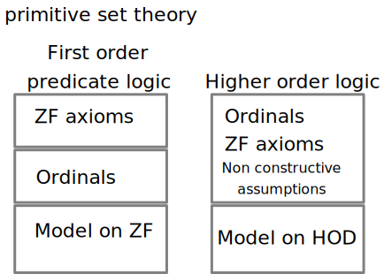
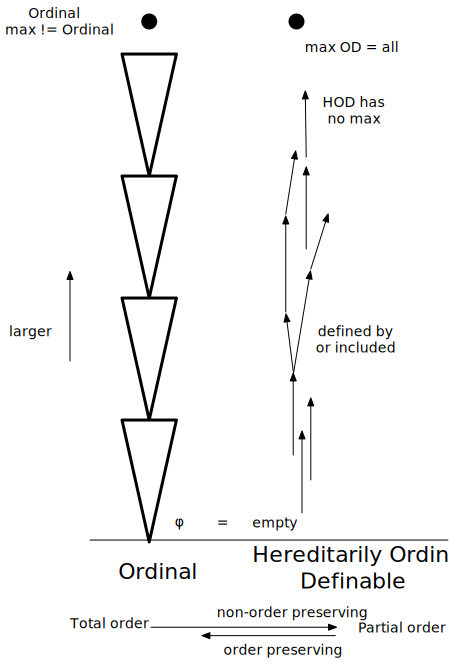

Constructing ZF Set Theory in Agda
Menu Menu
ZF in Agda
zf.agda axiom of ZF
zfc.agda axiom of choice
Ordinals.agda axiom of Ordinals
ordinal.agda countable model of Ordinals
OD.agda model of ZF based on Ordinal Definable Set with assumptions
ODC.agda Law of exclude middle from axiom of choice assumptions
LEMC.agda model of choice with assumption of the Law of exclude middle
OPair.agda ordered pair on OD
BAlgbra.agda Boolean algebra on OD (not yet done)
filter.agda Filter on OD (not yet done)
cardinal.agda Caedinal number on OD (not yet done)
logic.agda some basics on logic
nat.agda some basics on Nat
Programming Mathematics
Programming is processing data structure with λ terms.
We are going to handle Mathematics in intuitionistic logic with λ terms.
Mathematics is a functional programming which values are proofs.
Programming ZF Set Theory in Agda
Target
Describe ZF axioms in Agda Construction a Model of ZF Set Theory in Agda Show necessary assumptions for the model Show validities of ZF axioms on the modelThis shows consistency of Set Theory (with some assumptions), without circulating ZF Theory assumption.
ZF in Agda https://github.com/shinji-kono/zf-in-agda
Why Set Theory
If we can formulate Set theory, it suppose to work on any mathematical theory.Set Theory is a difficult point for beginners especially axiom of choice.
It has some amount of difficulty and self circulating discussion.
I'm planning to do it in my old age, but I'm enough age now.
if you familier with Agda, you can skip to there
Agda and Intuitionistic Logic
Curry Howard Isomorphism
Proposition : Proof ⇔ Type : Value
which means
constructing a typed lambda calculus which corresponds a logic
Typed lambda calculus which allows complex type as a value of a variable (System FC)
First class Type / Dependent Type
Agda is a such a programming language which has similar syntax of Haskell
Coq is specialized in proof assistance such as command and tactics .
Introduction of Agda
A length of a list of type A.
length : {A : Set } → List A → Nat
length [] = zero
length (_ ∷ t) = suc ( length t )
Simple functional programming language. Type declaration is mandatory.
A colon means type, an equal means value. Indentation based.
Set is a base type (which may have a level ).
{} means implicit variable which can be omitted if Agda infers its value.
data ( Sum type )
A data type which as exclusive multiple constructors. A similar one as union in C or case class in Scala.It has a similar syntax as Haskell but it has a slight difference.
data List (A : Set ) : Set where
[] : List A
_∷_ : A → List A → List A
_∷_ means infix operator. If use explicit _, it can be used in a normal function
syntax.
Natural number can be defined as a usual way.
data Nat : Set where
zero : Nat
suc : Nat → Nat
A → B means "A implies B"
In Agda, a type can be a value of a variable, which is usually called dependent type. Type has a name Set in Agda.
ex3 : {A B : Set} → Set
ex3 {A}{B} = A → B
ex3 is a type : A → B, which is a value of Set. It also means a formula : A implies B.
A type is a formula, the value is the proof
A value of A → B can be interpreted as an inference from the formula A to the formula B, which
can be a function from a proof of A to a proof of B.
introduction と elimination
For a logical operator, there are two types of inference, an introduction and an elimination.
intro creating symbol / constructor / introduction elim using symbolic / accessors / eliminationIn Natural deduction, this can be written in proof schema.
A
:
B A A → B
------------- →intro ------------------ →elim
A → B B
In Agda, this is a pair of type and value as follows. Introduction of → uses λ.
→intro : {A B : Set } → A → B → ( A → B )
→intro _ b = λ x → b
→elim : {A B : Set } → A → ( A → B ) → B
→elim a f = f a
Important
{A B : Set } → A → B → ( A → B )
is
{A B : Set } → ( A → ( B → ( A → B ) ))
This makes currying of function easy.
To prove A → B
Make a left type as an argument. (intros in Coq)
ex5 : {A B C : Set } → A → B → C → ?
ex5 a b c = ?
? is called a hole, which is unspecified part. Agda tell us which kind type is required for the Hole.
We are going to fill the holes, and if we have no warnings nor errors such as type conflict (Red), insufficient proof or instance (Yellow), Non-termination, the proof is completed.
A ∧ B
Well known conjunction's introduction and elimination is as follow.
A B A ∧ B A ∧ B
------------- ----------- proj1 ---------- proj2
A ∧ B A B
We can introduce a corresponding structure in our functional programming language.
record
record _∧_ A B : Set
field
proj1 : A
proj2 : B
_∧_ means infix operator. _∧_ A B can be written as A ∧ B (Haskell uses (∧) )
This a type which constructed from type A and type B. You may think this as an object or struct.
record { proj1 = x ; proj2 = y }
is a constructor of _∧_.
ex3 : {A B : Set} → A → B → ( A ∧ B )
ex3 a b = record { proj1 = a ; proj2 = b }
ex1 : {A B : Set} → ( A ∧ B ) → A
ex1 a∧b = proj1 a∧b
a∧b is a variable name. If we have no spaces in a string, it is a word even if we have symbols
except parenthesis or colons. A symbol requires space separation such as a type defining colon.
Defining record can be recursively, but we don't use the recursion here.
Mathematical structure
We have types of elements and the relationship in a mathematical structure.
logical relation has no ordering there is a natural ordering in arguments and a value in a functionSo we have typical definition style of mathematical structure with records.
record IsOrdinals {n : Level} (ord : Set n)
(_o<_ : ord → ord → Set n) : Set (suc (suc n)) where
field
Otrans : {x y z : ord } → x o< y → y o< z → x o< z
record Ordinals {n : Level} : Set (suc (suc n)) where
field
ord : Set n
_o<_ : ord → ord → Set n
isOrdinal : IsOrdinals ord _o<_
In IsOrdinals, axioms are written in flat way. In Ordinal, we may have
inputs and outputs are put in the field including IsOrdinal.
Fields of Ordinal is existential objects in the mathematical structure.
Limit Ordinal
If an ordinal is not a succesor of other, it is called limit ordinal. We need predicate to decide it.
not-limit-p : ( x : ord ) → Dec ( ¬ ((y : ord) → ¬ (x ≡ osuc y) ))
An ordinal may have an imeditate limit ordinal, we call it next x. Axiom of nrext is this.
record IsNext {n : Level } (ord : Set n) (o∅ : ord ) (osuc : ord → ord )
(_o<_ : ord → ord → Set n) (next : ord → ord ) : Set (suc (suc n)) where
field
x<nx : { y : ord } → (y o< next y )
osuc<nx : { x y : ord } → x o< next y → osuc x o< next y
¬nx<nx : {x y : ord} → y o< x → x o< next y → ¬ ((z : ord) → ¬ (x ≡ osuc z))
We show some intresting lemma.
next< : {x y z : Ordinal} → x o< next z → y o< next x → y o< next z
nexto=n : {x y : Ordinal} → x o< next (osuc y) → x o< next y
nexto≡ : {x : Ordinal} → next x ≡ next (osuc x)
next-is-limit : {x y : Ordinal} → ¬ (next x ≡ osuc y)
These are proved from the axiom. Our countable ordinal satisfies these.
A Model and a theory
Agda record is a type, so we can write it in the argument, but is it really exists?If we have a value of the record, it simply exists, that is, we need to create all the existence in the record satisfies all the axioms (= field of IsOrdinal) should be valid.
type of record = theory value of record = modelWe call the value of the record as a model. If mathematical structure has a model, it exists. Pretty Obvious.
postulate と module
Agda proofs are separated by modules, which are large records.postulates are assumptions. We can assume a type without proofs.
postulate
sup-o : ( Ordinal → Ordinal ) → Ordinal
sup-o< : { ψ : Ordinal → Ordinal } → ∀ {x : Ordinal } → ψ x o< sup-o ψ
sup-o is an example of upper bound of a function and sup-o< assumes it actually satisfies all the value is less than upper bound.
Writing some type in a module argument is the same as postulating a type, but postulate can be written the middle of a proof.
postulate can be constructive.
postulate can be inconsistent, which result everything has a proof. Actualy this assumption doesnot work for Ordinals, we discuss this later.
A ∨ B
data _∨_ (A B : Set) : Set where
case1 : A → A ∨ B
case2 : B → A ∨ B
As Haskell, case1/case2 are patterns.
ex3 : {A B : Set} → ( A ∨ A ) → A
ex3 = ?
In a case statement, Agda command C-C C-C generates possible cases in the head.
ex3 : {A B : Set} → ( A ∨ A ) → A
ex3 (case1 x) = ?
ex3 (case2 x) = ?
Proof schema of ∨ is omit due to the complexity.
Negation
⊥
------------- ⊥-elim
A
Anything can be derived from bottom, in this case a Set A. There is no introduction rule
in ⊥, which can be implemented as data which has no constructor.
data ⊥ : Set where
⊥-elim can be proved like this.
⊥-elim : {A : Set } -> ⊥ -> A
⊥-elim ()
() means no match argument nor value.
A negation can be defined using ⊥ like this.
¬_ : Set → Set
¬ A = A → ⊥
Equality
All the value in Agda are terms. If we have the same normalized form, two terms are equal. If we have variables in the terms, we will perform an unification. unifiable terms are equal. We don't go further on the unification.
{ x : A } x ≡ y f x y
--------------- ≡-intro --------------------- ≡-elim
x ≡ x f x x
equality _≡_ can be defined as a data.
data _≡_ {A : Set } : A → A → Set where
refl : {x : A} → x ≡ x
The elimination of equality is a substitution in a term.
subst : {A : Set } → { x y : A } → ( f : A → Set ) → x ≡ y → f x → f y
subst {A} {x} {y} f refl fx = fx
ex5 : {A : Set} {x y z : A } → x ≡ y → y ≡ z → x ≡ z
ex5 {A} {x} {y} {z} x≡y y≡z = subst ( λ k → x ≡ k ) y≡z x≡y
Equivalence relation
refl' : {A : Set} {x : A } → x ≡ x
refl' = ?
sym : {A : Set} {x y : A } → x ≡ y → y ≡ x
sym = ?
trans : {A : Set} {x y z : A } → x ≡ y → y ≡ z → x ≡ z
trans = ?
cong : {A B : Set} {x y : A } { f : A → B } → x ≡ y → f x ≡ f y
cong = ?
Ordering
Relation is a predicate on two value which has a same type.
A → A → SetDefining order is the definition of this type with predicate or a data.
data _≤_ : Rel ℕ 0ℓ where
z≤n : ∀ {n} → zero ≤ n
s≤s : ∀ {m n} (m≤n : m ≤ n) → suc m ≤ suc n
Quantifier
Handling quantifier in an intuitionistic logic requires special cares.
In the input of a function, there are no restriction on it, that is, it has a universal quantifier. (If we explicitly write ∀, Agda gives us a type inference on it)
There is no ∃ in agda, the one way is using negation like this.
∃ (x : A ) → p x = ¬ ( ( x : A ) → ¬ ( p x ) )
On the another way, f : A can be used like this.
p fIf we use a function which can be defined globally which has stronger meaning the usage of ∃ x in a logical expression.
Can we do math in this way?
Yes, we can. Actually we have Principia Mathematica by Russell and Whitehead (with out computer support).In some sense, this story is a reprinting of the work, (but Principia Mathematica has a different formulation than ZF).
define mathematical structure as a record
program inferences as if we have proofs in variables
Things which Agda cannot prove
The infamous Internal Parametricity is a limitation of Agda, it cannot prove so called Free Theorem, which leads uniqueness of a functor in Category Theory.
Functional extensionality cannot be proved.
(∀ x → f x ≡ g x) → f ≡ gAgda has no law of exclude middle.
a ∨ ( ¬ a )For example, (A → B) → ¬ B → ¬ A can be proved but, ( ¬ B → ¬ A ) → A → B cannot.
It also other problems such as termination, type inference or unification which we may overcome with efforts or devices or may not.
If we cannot prove something, we can safely postulate it unless it leads a contradiction.
Classical story of ZF Set Theory
Assuming ZF, constructing a model of ZF is a flow of classical Set Theory, which leads
a relative consistency proof of the Set Theory.
Ordinal number is used in the flow.
In Agda, first we defines Ordinal numbers (Ordinals), then introduce Ordinal Definable Set (OD).
We need some non constructive assumptions in the construction. A model of Set theory is
constructed based on these assumptions.

Successor osuc has no ordinal between osuc and the base ordinal. There are some ordinals
which is not a successor of any ordinals. It is called limit ordinal.
Any two ordinal can be compared, that is less, equal or more, that is total order.
We can define a list like structure with level, which is a kind of two dimensional infinite array.
It is easy to show OrdinalD and its order satisfies the axioms of Ordinals.
So our Ordinals has a mode. This means axiom of Ordinals are consistent.
If not, we may fix the axioms or the model, such as the definitions of the order.
We can also ask whether the inputs exist.
If we handle real-number in the model, only countable number of real-number is used.
We don't show the definition of cardinal number here.
From naive point view, a set i a list, but in Agda, elements have all the same type.
A set in ZF may contain other Sets in ZF, which not easy to implement it as a list.
Finite set may be written in finite series of ∨, but ...
This operation can be performed within a ZF Set theory. Classical Set Theory assumes
ZF, so this kind of thing is allowed.
But in our case, we have no ZF theory, so we are going to use Ordinals.
The idea is to use an ordinal as a pointer to a record which defines a Set.
If the recored defines a series of Ordinals which is a pointer to the Set. This record looks like a Set.
This is a kind of Russel paradox, that is if OD contains everything, what happens if it contains itself.
A ∋ x can be define as follows.

We use ODs as Sets in ZF, and defines record ZF, that is, we have to define
ZF axioms in Agda.
It may not valid in our model. We have to debug it.
Fixes are depends on axioms.
≡ is an equality of λ terms, but please not that this is equality on Ordinals.
Since _∨_ is a data, it can be developed as (C-c C-c : agda2-make-case ).
But we haven't defined == yet.
Axiom of Extensionality requires sets having the same elements are handled in the same way
each other.
x == y can be defined in this way.
Actual proof is rather complicated.
If we can derive (w ∋ A) ⇔ (w ∋ B) from od A == od B, the axiom becomes valid, but it seems impossible, so we assumes
It means it has ω as a ZF Set. It is ususally written like this.
To define an OD which arrows od→ord (Union (x , (x , x))) as a predicate, we can use Agda data structure.
In other words, the space between address of HOD and its bound is arbitrary, it is possible to assume ω has no bound.
This is the reason of necessity of Axiom of infinite.
Axiom of replacement uses upper bound of function on Ordinals, which makes it non-constructive.
Power Set axiom requires double negation,
Proof of validity is straight forward.
Once we have a bound, validity of the axiom is an easy task to check the logical relation-ship.
Axiom of regularity requires non self intersectable elements (which is called minimum), if we
replace it by a function, it becomes a choice function. It makes axiom of choice valid.
This means we cannot prove axiom regularity form our model, and if we postulate this, axiom of
choice also becomes valid.
The axiom of choice in the book is complicated using any pair in a set, so we use use a form in the Wikipedia.
Actually, it is well known to prove law of the exclude middle from axiom of choice in intuitionistic logic, and we can
perform the proof in our mode. Using the definition like this, predicates and ODs are related and we can ask the
set is empty or not if we have an axiom of choice, so we have the law of the exclude middle p ∨ ( ¬ p ) .
Our axiom are syntactically the same in the text book, but negations are slightly different.
If we assumes excluded middle, these are exactly same.
Even if we assumes excluded middle, intuitionistic logic itself remains consistent, but we cannot prove it.
Except the upper bound, axioms are simple logical relation.
Proof of existence of mapping between HOD and Ordinals are not obvious. We don't know we prove it or not.
Existence of the Upper bounds is a pure assumption, if we have not limit on Ordinals, it may contradicts,
but we don't have explicit upper limit on Ordinals.
Several inference on our model or our axioms are basically parallel to the set theory text book, so it looks like correct.
Instead, simply assumes non constructive assumption, various theory can be developed. We haven't check
these assumptions are proved in record ZF, so we are not sure, these development is a result of ZF Set theory.
ZF record itself is not necessary, for example, topology theory without ZF can be possible.
Topos itself is model of intuitionistic logic.
Transitive Sets are objects of Cartesian closed category.
It is possible to introduce Power Set Functor on it
We can use replacement A ∩ x for each element in Transitive Set,
in the similar way of our power set axiom. I
A model of ZF Set theory can be constructed on top of the Topos which is shown in Oisus.
Our Agda model is a proof theoretic version of it.
definition of cardinal number is not yet done
definition of filter is not yet done
we may have a model without axiom of choice or without continuum hypothesis
Possible representation of continuum hypothesis is this.
filter is a dual of ideal on boolean algebra or lattice. Existence on natural number
is depends on axiom of choice.
This may be simpler than classical forcing theory ( not yet done).
Type inference and termination is not so clear in multi recursions.
Defining Agda record is a good way to understand mathematical theory, for examples,
Ordinals
Ordinals are our intuition of infinite things, which has ∅ and orders on the things.
It also has a successor osuc.
record Ordinals {n : Level} : Set (suc (suc n)) where
field
ord : Set n
o∅ : ord
osuc : ord → ord
_o<_ : ord → ord → Set n
isOrdinal : IsOrdinals ord o∅ osuc _o<_
It is different from natural numbers in way. The order of Ordinals is not defined in terms
of successor. It is given from outside, which make it possible to have higher order infinity.
Axiom of Ordinals
Properties of infinite things. We request a transfinite induction, which states that if
some properties are satisfied below all possible ordinals, the properties are true on all
ordinals.
record IsOrdinals {n : Level} (ord : Set n) (o∅ : ord )
(osuc : ord → ord )
(_o<_ : ord → ord → Set n) : Set (suc (suc n)) where
field
Otrans : {x y z : ord } → x o< y → y o< z → x o< z
OTri : Trichotomous {n} _≡_ _o<_
¬x<0 : { x : ord } → ¬ ( x o< o∅ )
<-osuc : { x : ord } → x o< osuc x
osuc-≡< : { a x : ord } → x o< osuc a → (x ≡ a ) ∨ (x o< a)
TransFinite : { ψ : ord → Set (suc n) }
→ ( (x : ord) → ( (y : ord ) → y o< x → ψ y ) → ψ x )
→ ∀ (x : ord) → ψ x
Concrete Ordinals or Countable Ordinals
data OrdinalD {n : Level} : (lv : Nat) → Set n where
Φ : (lv : Nat) → OrdinalD lv
OSuc : (lv : Nat) → OrdinalD {n} lv → OrdinalD lv
The order of the OrdinalD can be defined in this way.
data _d<_ {n : Level} : {lx ly : Nat} → OrdinalD {n} lx → OrdinalD {n} ly → Set n where
Φ< : {lx : Nat} → {x : OrdinalD {n} lx} → Φ lx d< OSuc lx x
s< : {lx : Nat} → {x y : OrdinalD {n} lx} → x d< y → OSuc lx x d< OSuc lx y
This is a simple data structure, it has no abstract assumptions, and it is countable many data
structure.
Φ 0
OSuc 2 ( Osuc 2 ( Osuc 2 (Φ 2)))
Osuc 0 (Φ 0) d< Φ 1
Model of Ordinals
Debugging axioms using Model
Whether axiom is correct or not can be checked by a validity on a mode.
Countable Ordinals can contains uncountable set?
Yes, the ordinals contains any level of infinite Set in the axioms.
from the outside view point, it is countable
from the internal view point, it is uncountable
The definition of countable/uncountable is the same, but the properties are different
depending on the context.
What is Set
The word Set in Agda is not a Set of ZF Set, but it is a type (why it is named Set?).
We don't ask the contents of Set. It can be anything.
From empty set φ, we can think a set contains a φ, and a pair of φ and the set, and so on,
and all of them, and again we repeat this.
φ {φ} {φ,{φ}}, {φ,{φ},...}
It is called V.
Ordinal Definable Set
We can define a sbuset of Ordinals using predicates. What is a subset?
a predicate has an Ordinal argument
is an Ordinal Definable Set (OD). In Agda, OD is defined as follows.
record OD : Set (suc n ) where
field
def : (x : Ordinal ) → Set n
Ordinals itself is not a set in a ZF Set theory but a class. In OD,
data One : Set n where
OneObj : One
record { def = λ x → One }
means it accepets all Ordinals, i.e. this is Ordinals itself, so ODs are larger than ZF Set.
You can say OD is a class in ZF Set Theory term.
OD is not ZF Set
If we have 1 to 1 mapping between an OD and an Ordinal, OD contains several ODs and OD looks like
a Set. The idea is to use an ordinal as a pointer to OD.
Unfortunately this scheme does not work well. As we saw OD includes all Ordinals, which is a maximum of OD, but Ordinals has no maximum at all. So we have a contradction like
¬OD-order : ( od→ord : OD → Ordinal )
→ ( ord→od : Ordinal → OD ) → ( { x y : OD } → def y ( od→ord x ) → od→ord x o< od→ord y) → ⊥
¬OD-order od→ord ord→od c<→o< = ?
Actualy we can prove this contrdction, so we need some restrctions on OD.
HOD : Hereditarily Ordinal Definable
What we need is a bounded OD, the containment is limited by an ordinal.
record HOD : Set (suc n) where
field
od : OD
odmax : Ordinal
<odmax : {y : Ordinal} → def od y → y o< odmax
In classical Set Theory, HOD stands for Hereditarily Ordinal Definable, which means
HOD = { x | TC x ⊆ OD }
TC x is all transitive closure of x, that is elements of x and following all elements of them are all OD. But what is x? In this case, x is an Set which we don't have yet. In our case, HOD is a bounded OD.
1 to 1 mapping between an HOD and an Ordinal
HOD is a predicate on Ordinals and the solution is bounded by some ordinal. If we have a mapping
od→ord : HOD → Ordinal
ord→od : Ordinal → HOD
oiso : {x : HOD } → ord→od ( od→ord x ) ≡ x
diso : {x : Ordinal } → od→ord ( ord→od x ) ≡ x
we can check an HOD is an element of the OD using def.
_∋_ : ( A x : HOD ) → Set n
_∋_ A x = def (od A) ( od→ord x )
In ψ : Ordinal → Set, if A is a record { def = λ x → ψ x } , then
A x = def A ( od→ord x ) = ψ (od→ord x)
They say the existing of the mappings can be proved in Classical Set Theory, but we
simply assumes these non constructively.
Order preserving in the mapping of OD and Ordinal
Ordinals have the order and HOD has a natural order based on inclusion ( def / ∋ ).
def (od y) ( od→ord x )
An elements of HOD should be defined before the HOD, that is, an ordinal corresponding an elements
have to be smaller than the corresponding ordinal of the containing OD.
We also assumes subset is always smaller. This is necessary to make a limit of Power Set.
c<→o< : {x y : HOD } → def (od y) ( od→ord x ) → od→ord x o< od→ord y
⊆→o≤ : {y z : HOD } → ({x : Ordinal} → def (od y) x → def (od z) x ) → od→ord y o< osuc (od→ord z)
If wa assumes reverse order preservation,
o<→c< : {n : Level} {x y : Ordinal } → x o< y → def (ord→od y) x
∀ x ∋ ∅ becomes true, which manes all OD becomes Ordinals in the model.
Various Sets
In classical Set Theory, there is a hierarchy call L, which can be defined by a predicate.
Ordinal / things satisfies axiom of Ordinal / extension of natural number
V / hierarchical construction of Set from φ
L / hierarchical predicate definable construction of Set from φ
HOD / Hereditarily Ordinal Definable
OD / equational formula on Ordinals
Agda Set / Type / it also has a level
Fixing ZF axom to fit intuitionistic logic
Pure logical axioms
empty, pair, select, ε-induction??infinity
These are logical relations among OD.
empty : ∀( x : ZFSet ) → ¬ ( ∅ ∋ x )
pair→ : ( x y t : ZFSet ) → (x , y) ∋ t → ( t ≈ x ) ∨ ( t ≈ y )
pair← : ( x y t : ZFSet ) → ( t ≈ x ) ∨ ( t ≈ y ) → (x , y) ∋ t
selection : { ψ : ZFSet → Set m } → ∀ { X y : ZFSet } → ( ( y ∈ X ) ∧ ψ y ) ⇔ (y ∈ Select X ψ )
infinity∅ : ∅ ∈ infinite
infinity : ∀( x : ZFSet ) → x ∈ infinite → ( x ∪ ( x , x ) ) ∈ infinite
ε-induction : { ψ : OD → Set (suc n)}
→ ( {x : OD } → ({ y : OD } → x ∋ y → ψ y ) → ψ x )
→ (x : OD ) → ψ x
finitely can be define by Agda data.
data infinite-d : ( x : Ordinal ) → Set n where
iφ : infinite-d o∅
isuc : {x : Ordinal } → infinite-d x →
infinite-d (od→ord ( Union (ord→od x , (ord→od x , ord→od x ) ) ))
Union (x , ( x , x )) should be an direct successor of x, but we cannot prove it in our model.
Axiom of Pair
In the Tanaka's book, axiom of pair is as follows.
∀ x ∀ y ∃ z ∀ t ( z ∋ t ↔ t ≈ x ∨ t ≈ y)
We have fix ∃ z, a function (x , y) is defined, which is _,_ .
_,_ : ( A B : ZFSet ) → ZFSet
using this, we can define two directions in separates axioms, like this.
pair→ : ( x y t : ZFSet ) → (x , y) ∋ t → ( t ≈ x ) ∨ ( t ≈ y )
pair← : ( x y t : ZFSet ) → ( t ≈ x ) ∨ ( t ≈ y ) → (x , y) ∋ t
This is already written in Agda, so we use these as axioms. All inputs have ∀.
pair in OD
OD is an equation on Ordinals, we can simply write axiom of pair in the OD.
_,_ : HOD → HOD → HOD
x , y = record { od = record { def = λ t → (t ≡ od→ord x ) ∨ ( t ≡ od→ord y ) } ; odmax = ? ; <odmax = ? }
It is easy to find out odmax from odmax of x and y.
Validity of Axiom of Pair
Assuming ZFSet is OD, we are going to prove pair→ .
pair→ : ( x y t : OD ) → (x , y) ∋ t → ( t == x ) ∨ ( t == y )
pair→ x y t p = ?
In this program, type of p is ( x , y ) ∋ t , that is def ( x , y ) that is, (t ≡ od→ord x ) ∨ ( t ≡ od→ord y ) .
pair→ x y t (case1 t≡x ) = ?
pair→ x y t (case2 t≡y ) = ?
The type of the ? is ( t == x ) ∨ ( t == y ), again it is data _∨_ .
pair→ x y t (case1 t≡x ) = case1 ?
pair→ x y t (case2 t≡y ) = case2 ?
The ? in case1 is t == x, so we have to create this from t≡x, which is a name of a variable
which type is
t≡x : od→ord t ≡ od→ord x
which is shown by an Agda command (C-C C-E : agda2-show-context ).
Equality of OD and Axiom of Extensionality
OD is defined by a predicates, if we compares normal form of the predicates, even if
it contains the same elements, it may be different, which is no good as an equality of
Sets.
∀ z ( z ∈ x ⇔ z ∈ y ) ⇒ ∀ w ( x ∈ w ⇔ y ∈ w )
We can write this axiom in Agda as follows.
extensionality : { A B w : ZFSet } → ( (z : ZFSet) → ( A ∋ z ) ⇔ (B ∋ z) ) → ( A ∈ w ⇔ B ∈ w )
So we use ( A ∋ z ) ⇔ (B ∋ z) as an equality (_==_) of our model. We have to show
A ∈ w ⇔ B ∈ w from A == B.
record _==_ ( a b : OD ) : Set n where
field
eq→ : ∀ { x : Ordinal } → def a x → def b x
eq← : ∀ { x : Ordinal } → def b x → def a x
Actually, (z : HOD) → (A ∋ z) ⇔ (B ∋ z) implies od A == od B.
extensionality0 : {A B : HOD } → ((z : HOD) → (A ∋ z) ⇔ (B ∋ z)) → od A == od B
eq→ (extensionality0 {A} {B} eq ) {x} d = ?
eq← (extensionality0 {A} {B} eq ) {x} d = ?
? are def B x and def A x and these are generated from eq : (z : OD) → (A ∋ z) ⇔ (B ∋ z) .
eq→ (extensionality0 {A} {B} eq ) {x} d = odef-iso {A} {B} (sym diso) (proj1 (eq (ord→od x))) d
eq← (extensionality0 {A} {B} eq ) {x} d = odef-iso {B} {A} (sym diso) (proj2 (eq (ord→od x))) d
where
odef-iso : {A B : HOD } {x y : Ordinal } → x ≡ y → (def A (od y) → def (od B) y) → def (od A) x → def (od B) x
odef-iso refl t = t
Validity of Axiom of Extensionality
==→o≡ : { x y : HOD } → (od x == od y) → x ≡ y
Using this, we have
extensionality : {A B w : HOD } → ((z : HOD ) → (A ∋ z) ⇔ (B ∋ z)) → (w ∋ A) ⇔ (w ∋ B)
proj1 (extensionality {A} {B} {w} eq ) d = subst (λ k → w ∋ k) ( ==→o≡ (extensionality0 {A} {B} eq) ) d
proj2 (extensionality {A} {B} {w} eq ) d = subst (λ k → w ∋ k) (sym ( ==→o≡ (extensionality0 {A} {B} eq) )) d
Axiom of infinity
∃ A ( ∅ ∈ A ∧ ∀ x ∈ A ( x ∪ { x } ∈ A ) )
x ∪ { x } is Union (x , (x , x)) in our notation. It contains existential quantifier, so we introduce a function
infinite : ZFSet
infinity∅ : ∅ ∈ infinite
infinity : ∀( x : ZFSet ) → x ∈ infinite → ( x ∪ ｛ x ｝) ∈ infinite
ω in HOD
data infinite-d : ( x : Ordinal ) → Set n where
iφ : infinite-d o∅
isuc : {x : Ordinal } → infinite-d x →
infinite-d (od→ord ( Union (ord→od x , (ord→od x , ord→od x ) ) ))
It has simular structure as Data.Nat in Agda, and it defines a correspendence of HOD and the data structure. Now
we can define HOD like this.
infinite : HOD
infinite = record { od = record { def = λ x → infinite-d x } ; odmax = ? ; <odmax = ? }
So what is the bound of ω? Analyzing the definition, it depends on the value of od→ord (x , x), which
cannot know the aboslute value. This is because we don't have constructive definition of od→ord : HOD → Ordinal.
HOD Ordrinal mapping
We have large freedom on HOD. We reqest no minimality on odmax, so it may arbitrary larger.
The address of HOD can be larger at least it have to be larger than the content's address.
We only have a relative ordering such as
pair-xx<xy : {x y : HOD} → od→ord (x , x) o< osuc (od→ord (x , y) )
pair<y : {x y : HOD } → y ∋ x → od→ord (x , x) o< osuc (od→ord y)
Basicaly, we cannot know the concrete address of HOD other than empty set.
Possible restriction on HOD
We need some restriction on the HOD-Ordinal mapping. Simple one is this.
ωmax : Ordinal
<ωmax : {y : Ordinal} → infinite-d y → y o< ωmax
It depends on infinite-d and put no assuption on the other similar construction. A more general one may be
hod-ord< : {x : HOD } → Set n
hod-ord< {x} = od→ord x o< next (odmax x)
next : Ordinal → Ordinal means imediate next limit ordinal of x. It supress unecessary space between address of HOD and
its bound.
increment pase of address of HOD
Assuming, hod-ord< , we have
pair-ord< : {x : HOD } → ( {y : HOD } → od→ord y o< next (odmax y) ) → od→ord ( x , x ) o< next (od→ord x)
pair-ord< {x} ho< = subst (λ k → od→ord (x , x) o< k ) lemmab0 lemmab1 where
lemmab0 : next (odmax (x , x)) ≡ next (od→ord x)
So the address of ( x , x) and Union (x , (x , x)) is restricted in the limit ordinal. This makes ω bound. We can prove
infinite-bound : ({x : HOD} → od→ord x o< next (odmax x)) → {y : Ordinal} → infinite-d y → y o< next o∅
We also notice that if we have od→ord (x , x) ≡ osuc (od→ord x), c<→o< can be drived from ⊆→o≤ .
⊆→o≤→c<→o< : ({x : HOD} → od→ord (x , x) ≡ osuc (od→ord x) )
→ ({y z : HOD } → ({x : Ordinal} → def (od y) x → def (od z) x ) → od→ord y o< osuc (od→ord z) )
→ {x y : HOD } → def (od y) ( od→ord x ) → od→ord x o< od→ord y
Non constructive assumptions so far
od→ord : HOD → Ordinal
ord→od : Ordinal → HOD
c<→o< : {x y : HOD } → def (od y) ( od→ord x ) → od→ord x o< od→ord y
⊆→o≤ : {y z : HOD } → ({x : Ordinal} → def (od y) x → def (od z) x ) → od→ord y o< osuc (od→ord z)
oiso : {x : HOD } → ord→od ( od→ord x ) ≡ x
diso : {x : Ordinal } → od→ord ( ord→od x ) ≡ x
==→o≡ : {x y : HOD } → (od x == od y) → x ≡ y
sup-o : (A : HOD) → ( ( x : Ordinal ) → def (od A) x → Ordinal ) → Ordinal
sup-o< : (A : HOD) → { ψ : ( x : Ordinal ) → def (od A) x → Ordinal } → ∀ {x : Ordinal } → (lt : def (od A) x ) → ψ x lt o< sup-o A ψ
Axiom which have negation form
Union, Selection
These axioms contains ∃ x as a logical relation, which can be described in ¬ ( ∀ x ( ¬ p )).
power→ : ∀( A t : ZFSet ) → Power A ∋ t → ∀ {x} → t ∋ x → ¬ ¬ ( A ∋ x )
power← : ∀( A t : ZFSet ) → t ⊆_ A → Power A ∋ t
If we have an assumption of law of exclude middle, we can recover the original A ∋ x form.
Union
The original form of the Axiom of Union is
∀ x ∃ y ∀ z (z ∈ y ⇔ ∃ u ∈ x ∧ (z ∈ u))
Union requires the existence of b in a ⊇ ∃ b ∋ x . We will use negation form of ∃.
union→ : ( X z u : ZFSet ) → ( X ∋ u ) ∧ (u ∋ z ) → Union X ∋ z
union← : ( X z : ZFSet ) → (X∋z : Union X ∋ z ) → ¬ ( (u : ZFSet ) → ¬ ((X ∋ u) ∧ (u ∋ z )))
The definition of Union in HOD is like this.
Union : HOD → HOD
Union U = record { od = record { def = λ x → ¬ (∀ (u : Ordinal ) → ¬ ((odef U u) ∧ (odef (ord→od u) x))) }
; odmax = osuc (od→ord U) ; <odmax = ? }
The bound of Union is evident, but its proof is rather complicated.
union→ : (X z u : HOD) → (X ∋ u) ∧ (u ∋ z) → Union X ∋ z
union→ X z u xx not = ⊥-elim ( not (od→ord u) ( record { proj1 = proj1 xx
; proj2 = subst ( λ k → odef k (od→ord z)) (sym oiso) (proj2 xx) } ))
union← : (X z : HOD) (X∋z : Union X ∋ z) → ¬ ( (u : HOD ) → ¬ ((X ∋ u) ∧ (u ∋ z )))
union← X z UX∋z = FExists _ lemma UX∋z where
lemma : {y : Ordinal} → odef X y ∧ odef (ord→od y) (od→ord z) → ¬ ((u : HOD) → ¬ (X ∋ u) ∧ (u ∋ z))
lemma {y} xx not = not (ord→od y) record { proj1 = subst ( λ k → odef X k ) (sym diso) (proj1 xx ) ; proj2 = proj2 xx }
where
FExists : {m l : Level} → ( ψ : Ordinal → Set m )
→ {p : Set l} ( P : { y : Ordinal } → ψ y → ¬ p )
→ (exists : ¬ (∀ y → ¬ ( ψ y ) ))
→ ¬ p
FExists {m} {l} ψ {p} P = contra-position ( λ p y ψy → P {y} ψy p )
which checks existence using contra-position.
Axiom of replacement
We can replace the elements of a set by a function and it becomes a set. From the book,
∀ x ∀ y ∀ z ( ( ψ ( x , y ) ∧ ψ ( x , z ) ) → y = z ) → ∀ X ∃ A ∀ y ( y ∈ A ↔ ∃ x ∈ X ψ ( x , y ) )
The existential quantifier can be related by a function,
Replace : HOD → (HOD → HOD ) → HOD
The axioms becomes as follows.
replacement← : {ψ : ZFSet → ZFSet} → ∀ ( X x : ZFSet ) → x ∈ X → ψ x ∈ Replace X ψ
replacement→ : {ψ : ZFSet → ZFSet} → ∀ ( X x : ZFSet ) → ( lt : x ∈ Replace X ψ ) → ¬ ( ∀ (y : ZFSet) → ¬ ( x ≈ ψ y ) )
In the axiom, the existence of the original elements is necessary. In order to do that we use OD which has
negation form of existential quantifier in the definition.
in-codomain : (X : OD ) → ( ψ : OD → OD ) → OD
in-codomain X ψ = record { def = λ x → ¬ ( (y : Ordinal ) → ¬ ( def X y ∧ ( x ≡ od→ord (ψ (ord→od y ))))) }
in-codomain is a logical relation-ship, and it is written in OD.
Replace : HOD → (HOD → HOD) → HOD
Replace X ψ = record { od = record { def = λ x → (x o< sup-o X (λ y X∋y → od→ord (ψ (ord→od y)))) ∧ def (in-codomain X ψ) x }
; odmax = rmax ; <odmax = rmax<} where
rmax : Ordinal
rmax = sup-o X (λ y X∋y → od→ord (ψ (ord→od y)))
rmax< : {y : Ordinal} → (y o< rmax) ∧ def (in-codomain X ψ) y → y o< rmax
rmax< lt = proj1 lt
The bbound of Replace is defined by supremum, that is, it is not limited in a limit ordinal of original ZF Set.
Validity of Power Set Axiom
The original Power Set Axiom is this.
∀ X ∃ A ∀ t ( t ∈ A ↔ t ⊆ X ) )
The existential quantifier is replaced by a function
Power : ( A : OD ) → OD
t ⊆ X is a record like this.
record _⊆_ ( A B : OD ) : Set (suc n) where
field
incl : { x : OD } → A ∋ x → B ∋ x
Axiom becomes likes this.
power→ : ( A t : OD) → Power A ∋ t → {x : OD} → t ∋ x → ¬ ¬ (A ∋ x)
power← : (A t : OD) → ({x : OD} → (t ∋ x → A ∋ x)) → Power A ∋ t
The validity of the axioms are slight complicated, we have to define set of all subset. We define
subset in a different form.
ZFSubset : (A x : HOD ) → HOD
ZFSubset A x = record { od = record { def = λ y → odef A y ∧ odef x y } ; odmax = omin (odmax A) (odmax x) ; <odmax = lemma } where
lemma : {y : Ordinal} → def (od A) y ∧ def (od x) y → y o< omin (odmax A) (odmax x)
lemma {y} and = min1 (<odmax A (proj1 and)) (<odmax x (proj2 and))
We can prove,
( {y : HOD } → x ∋ y → ZFSubset A x ∋ y ) ⇔ ( x ⊆ A )
We only have upper bound as an ordinal, but we have an obvious OD based on the order of Ordinals,
which is an Ordinals with our Model.
Ord : ( a : Ordinal ) → OD
Ord a = record { def = λ y → y o< a }
Def : (A : OD ) → OD
Def A = Ord ( sup-o ( λ x → od→ord ( ZFSubset A (ord→od x )) ) )
This is slight larger than Power A, so we replace all elements x by A ∩ x (some of them may empty).
Power : OD → OD
Power A = Replace (Def (Ord (od→ord A))) ( λ x → A ∩ x )
Creating Power Set of Ordinals is rather easy, then we use replacement axiom on A ∩ x since we have this.
∩-≡ : { a b : HOD } → ({x : HOD } → (a ∋ x → b ∋ x)) → od a == od ( b ∩ a )
In case of Ord a intro of Power Set axiom becomes valid.
ord-power← : (a : Ordinal ) (t : HOD) → ({x : HOD} → (t ∋ x → (Ord a) ∋ x)) → OPwr (Ord a) ∋ t
Using this, we can prove,
power→ : ( A t : HOD) → Power A ∋ t → {x : HOD} → t ∋ x → ¬ ¬ (A ∋ x)
power← : (A t : HOD) → ({x : HOD} → (t ∋ x → A ∋ x)) → Power A ∋ t
Axiom of regularity, Axiom of choice, ε-induction
minimal : (x : HOD ) → ¬ (x == od∅ )→ OD
x∋minimal : (x : HOD ) → ( ne : ¬ (x == od∅ ) ) → def x ( od→ord ( minimal x ne ) )
minimal-1 : (x : HOD ) → ( ne : ¬ (x == od∅ ) ) → (y : HOD ) → ¬ ( def (minimal x ne) (od→ord y)) ∧ (def x (od→ord y) )
We can avoid this using ε-induction (a predicate is valid on all set if the predicate is true on some element of set).
Assuming law of exclude middle, they say axiom of regularity will be proved, but we haven't check it yet.
ε-induction : { ψ : HOD → Set (suc n)}
→ ( {x : HOD } → ({ y : HOD } → x ∋ y → ψ y ) → ψ x )
→ (x : HOD ) → ψ x
In our model, we assumes the mapping between Ordinals and OD, this is actually the TransFinite induction in Ordinals.
∀ X [ ∅ ∉ X → (∃ f : X → ⋃ X ) → ∀ A ∈ X ( f ( A ) ∈ A ) ]
We can formulate like this.
choice-func : (X : ZFSet ) → {x : ZFSet } → ¬ ( x ≈ ∅ ) → ( X ∋ x ) → ZFSet
choice : (X : ZFSet ) → {A : ZFSet } → ( X∋A : X ∋ A ) → (not : ¬ ( A ≈ ∅ )) → A ∋ choice-func X not X∋A
It does not requires ∅ ∉ X .
Axiom of choice and Law of Excluded Middle
In our model, since HOD has a mapping to Ordinals, it has evident order, which means well ordering theorem is valid,
but it don't have correct form of the axiom yet. They say well ordering axiom is equivalent to the axiom of choice,
but it requires law of the exclude middle.
ppp : { p : Set n } { a : HOD } → record { def = λ x → p } ∋ a → p
ppp {p} {a} d = d
We can prove axiom of choice from law excluded middle since we have TransFinite induction. So Axiom of choice
and Law of Excluded Middle is equivalent in our mode.
Relation-ship among ZF axiom
Non constructive assumption in our model
mapping between HOD and Ordinals
od→ord : HOD → Ordinal
ord→od : Ordinal → OD
oiso : {x : HOD } → ord→od ( od→ord x ) ≡ x
diso : {x : Ordinal } → od→ord ( ord→od x ) ≡ x
c<→o< : {x y : HOD } → def y ( od→ord x ) → od→ord x o< od→ord y
⊆→o≤ : {y z : HOD } → ({x : Ordinal} → def (od y) x → def (od z) x ) → od→ord y o< osuc (od→ord z)
Equivalence on OD
==→o≡ : { x y : HOD } → (od x == od y) → x ≡ y
Upper bound
sup-o : (A : HOD) → ( ( x : Ordinal ) → def (od A) x → Ordinal ) → Ordinal
sup-o< : (A : HOD) → { ψ : ( x : Ordinal ) → def (od A) x → Ordinal } → ∀ {x : Ordinal } → (lt : def (od A) x ) → ψ x lt o< sup-o A ψ
In order to have bounded ω,
hod-ord< : {x : HOD} → od→ord x o< next (odmax x)
Axiom of choice and strong axiom of regularity.
minimal : (x : HOD ) → ¬ (x =h= od∅ )→ HOD
x∋minimal : (x : HOD ) → ( ne : ¬ (x =h= od∅ ) ) → odef x ( od→ord ( minimal x ne ) )
minimal-1 : (x : HOD ) → ( ne : ¬ (x =h= od∅ ) ) → (y : HOD ) → ¬ ( odef (minimal x ne) (od→ord y)) ∧ (odef x (od→ord y) )
So it this correct?
How to use Agda Set Theory
Assuming record ZF, classical set theory can be developed. If necessary, axiom of choice can be
postulated or assuming law of excluded middle.
Topos and Set Theory
Topos is a mathematical structure in Category Theory, which is a Cartesian closed category which has a
sub-object classifier.
Cardinal number and Continuum hypothesis
Axiom of choice is required to define cardinal number
continuum-hyphotheis : (a : Ordinal) → Power (Ord a) ⊆ Ord (osuc a)
Filter
record Filter ( L : HOD ) : Set (suc n) where
field
filter : OD
proper : ¬ ( filter ∋ od∅ )
inL : filter ⊆ L
filter1 : { p q : HOD } → q ⊆ L → filter ∋ p → p ⊆ q → filter ∋ q
filter2 : { p q : HOD } → filter ∋ p → filter ∋ q → filter ∋ (p ∩ q)
We may construct a model of non standard analysis or set theory.
Programming Mathematics
Mathematics is a functional programming in Agda where proof is a value of a variable. The mathematical
structure are
record and data
Proof is check by type consistency not by the computation, but it may include some normalization.
Category theory ( Yoneda lemma, Floyd Adjunction functor theorem, Applicative functor )
Automaton ( Subset construction、Language containment)
are proved in Agda.
link
Summer school of foundation of mathematics (in Japanese)
https://www.sci.shizuoka.ac.jp/~math/yorioka/ss2019/
Foundation of axiomatic set theory (in Japanese)
https://www.sci.shizuoka.ac.jp/~math/yorioka/ss2019/sakai0.pdf
Agda
https://agda.readthedocs.io/en/v2.6.0.1/
ZF-in-Agda source
https://github.com/shinji-kono/zf-in-agda.git
Category theory in Agda source
https://github.com/shinji-kono/category-exercise-in-agda